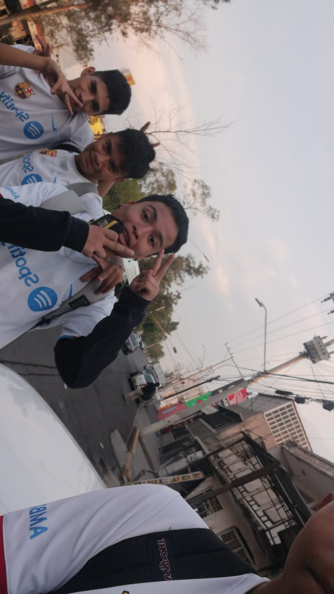

Amigos de la secundaria la verdad es que ya casi no hablo con ninguno mas que nada por que cuando me mude todos tomamos caminos diferente y planes distintos por lo que ya casi no hablábamos hasta que ya dejamos de hablar, a veces llego a hablar con mi ex compañeros de equipo de futbol mi mejor amigo es Dzul se llama tony pero le digo Dzul por su apellido, en la preparatoria eh conocido nuevos amigos que aun que no los conozca de tanto tiempo me caen bien aun que a veces nuestros pensamientos no coincidan, mi mejor amiga es una chica llamada rosa la cual es hermana de mi mejor amigo por eso me llevo muy bien con los dos y pues otras personas con las que a veces hablo mis ex compañeros de equipo
